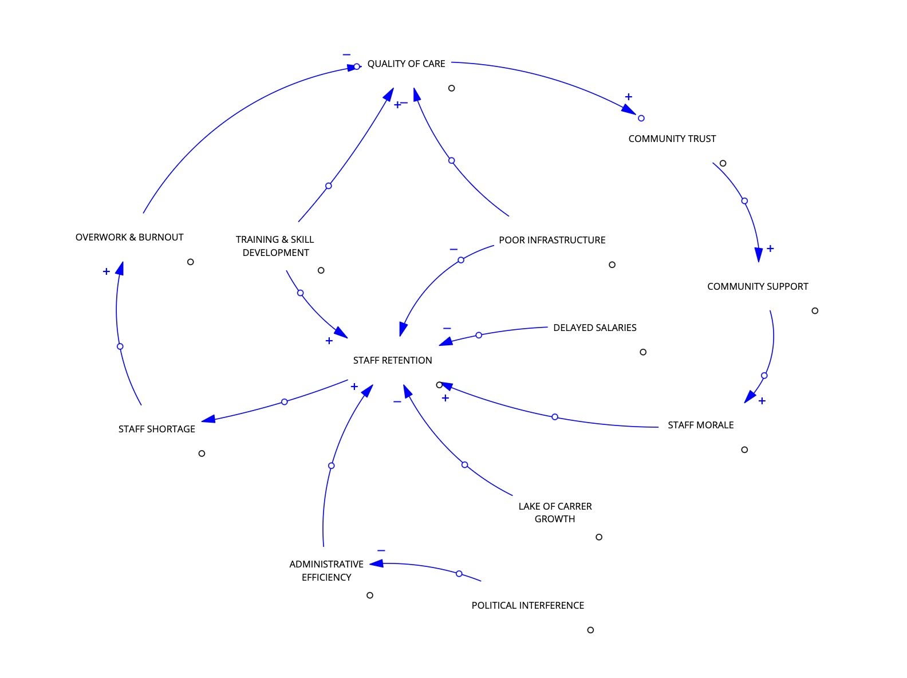
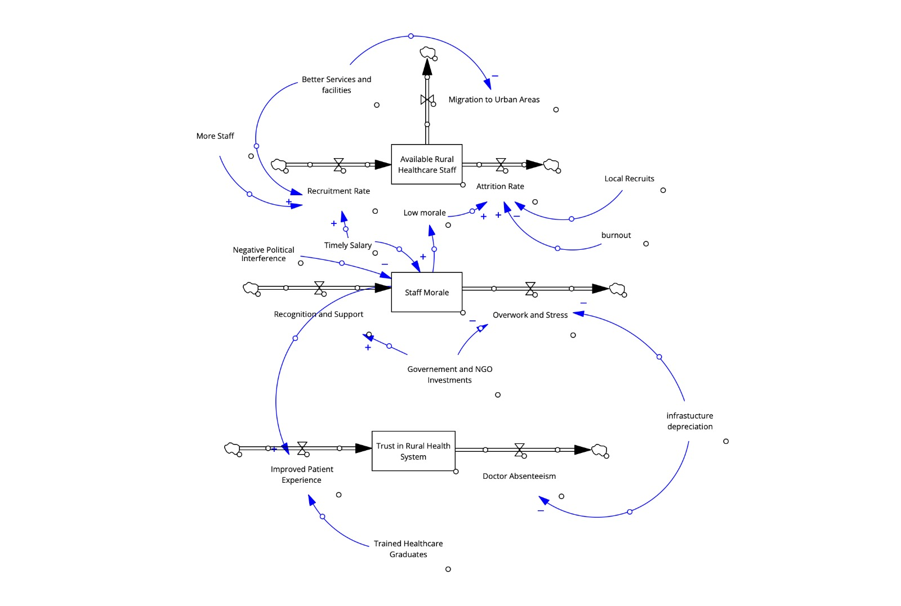

Introduction to the Problem
Over 65% of India's population resides in rural areas, where healthcare services remain critically understaffed despite ongoing government initiatives. Chronic shortages of trained doctors, nurses, and healthcare workers plague these regions, severely undermining the capacity of Primary Health Centers (PHCs) and other rural facilities. This persistent scarcity leads to overburdened medical staff, extended wait times for patients, and diminished quality of care, contributing directly to poor health outcomes and increased rural morbidity and mortality rates. Such challenges are not merely a result of insufficient recruitment but stem from deep-rooted systemic issues involving ineffective human resource management, inequitable distribution of healthcare personnel, and operational inefficiencies. Current interventions have largely failed to address these structural problems comprehensively, highlighting the need for more sustainable and holistic solutions that tackle the core mechanisms underlying healthcare staffing deficits in rural India.
Process Followed
The team adopted a structured, multi-step methodology to analyze the shortage of healthcare workers in rural India. Initial brainstorming sessions helped define the problem domain by prioritizing relevance and supporting field data. To gain firsthand insights, a primary interview was conducted with a Primary Health Center (PHC) doctor actively working in a rural setting. Next, system variables influencing staff availability were identified and mapped, leading to the development of a Causal Loop Diagram (CLD) that visually represents the feedback loops and interdependencies driving the issue. Leveraging Donella Meadows' framework, key leverage points were pinpointed to reveal strategic intervention opportunities. The team then examined common system archetypes to understand recurring patterns such as “Fixes That Fail” and “Shifting the Burden.” Finally, insights were layered using an Event → Pattern → Structure approach to articulate how immediate events relate to deeper systemic structures. These comprehensive analyses were compiled into the final report for policy recommendations.
Causal Loop Diagram (CLD) and Variables
A Causal Loop Diagram (CLD) is a systems thinking tool used to visualize and understand complex interactions among variables in dynamic systems. In the context of rural healthcare staffing, the CLD illustrates how various factors influence one another through reinforcing and balancing feedback loops, shaping the persistent shortage of trained healthcare workers.
Key variables identified include:
- Staff Shortages: Insufficient numbers of doctors, nurses, and healthcare workers.
- Overwork & Burnout: Physical and emotional exhaustion due to excessive workload.
- Quality of Care: Effectiveness and standard of medical services provided.
- Delayed Salaries: Late payment of wages impacting motivation.
- Staff Retention: Ability to keep trained personnel in rural posts.
- Poor Infrastructure: Inadequate facilities, equipment, and amenities.
- Political Interference: Influence of local politics on administrative decisions.
- Administrative Efficiency: Management quality and coordination.
- Lack of Career Growth: Limited professional development opportunities.
- Training and Skill Development: Ongoing education access for rural staff.
- Community Support: Cooperation and help from local residents.
- Staff Morale: Motivation and job satisfaction levels.
- Community Trust: Local population's confidence in healthcare services.
These variables are interconnected. For example, staff shortages increase workload, which raises burnout and lowers morale, adversely affecting retention and the quality of care. Delayed salaries and political interference reduce administrative efficiency, exacerbating infrastructure problems. Conversely, strong community support and effective training can improve morale and retention, creating reinforcing loops that mitigate shortages.
A visual representation of these interactions is provided in the accompanying CLD figure, which highlights the systemic feedback loops driving the rural healthcare staffing crisis.
 Leverage Points Analysis
This analysis identifies critical leverage points grounded in Donella Meadows' framework that can positively transform rural healthcare staffing systems by modifying system rules and enhancing information flows.
- Biometric Attendance Limited to Administration: Restricting biometric attendance to administrative staff reduces unnecessary scrutiny and harassment faced by healthcare workers. This change in system rules fosters a more supportive work environment, improving staff morale and focus on clinical duties.
- Timely Salary Payments:Ensuring prompt and regular salary disbursement directly influences staff retention and motivation. When financial remuneration is reliable, it strengthens trust in the system's fairness and reduces attrition, thereby stabilizing workforce availability.
- Career Development Programs:Implementing structured opportunities for skill enhancement and specialization empowers rural healthcare workers. Improved professional growth possibilities elevate job satisfaction, enhance quality of care, and encourage long-term commitment to rural postings by changing information flows about career pathways.
- Use of Certified Professionals:Mandating recruitment and retention of certified and qualified personnel raises workforce professionalism. This rule-based intervention ensures higher competence, reducing service gaps and increasing patient confidence in rural health services.
- Community Awareness and Trust Building:: Enhancing local community engagement through information campaigns builds trust and cooperation between residents and healthcare providers. Strengthened community support improves patient compliance, reduces hostility, and creates a protective environment for healthcare workers.
Collectively, these leverage points address both the structural rules and the flow of critical information within the system, breaking negative feedback loops and enabling sustainable improvements in healthcare staffing and service quality in rural India.
System Archetypes
Two key system archetypes illustrate the persistent staffing challenges faced by rural healthcare in India:
● Fixes That Fail: This archetype emerges when quick fixes—such as contractual hiring or short-term financial incentives—are introduced to ease staff shortages. Although they provide temporary relief, these measures do not address deeper issues like inadequate infrastructure, poor management, and lack of career growth opportunities. As a result, the initial problem re-emerges or worsens, creating a cycle of ineffective solutions.
● Shifting the Burden: This pattern involves over-relying on temporary measures, such as hiring local workers or offering short contracts, instead of addressing fundamental problems. These band-aid solutions divert attention and resources from long-term systemic reforms—like improving administrative efficiency or expanding training capacity—eventually weakening workforce stability and care quality.
Recognizing these archetypes is crucial for understanding why staffing shortages persist despite numerous interventions. It underscores the importance of holistic, systemic reform over reactive, short-term strategies.
Event → Pattern → Structure Analysis
The Event → Pattern → Structure framework helps unravel the complex causes behind rural healthcare staffing shortages.
Event: Chronic lack of doctors, nurses, and healthcare workers in rural Primary Health Centers (PHCs).
Pattern: Repeated staff burnout, high attrition rates, and persistent overburdening of the already limited workforce. These recurring outcomes suggest deeper systemic issues rather than isolated incidents.
Structure: At the core, the structure comprises:
- Poor administrative systems that delay salary payments,
- Restrictions on career progression,
- Inadequate infrastructure and medical resources,
- Lack of effective grievance redressal mechanisms.
These structural weaknesses undermine staff motivation and retention, perpetuating the staffing crisis in rural areas.
Current interventions mostly treat symptoms—such as financial incentives or local recruitment—without transforming these underlying structures.
Effective systemic change requires:
- Separating administrative duties from clinical roles to reduce inefficiencies,
- Upgrading infrastructure and working conditions,
- Mandating rural service rotations for urban doctors,
- Streamlining promotion pathways and grievance mechanisms to improve morale and career growth.
Final Insights
Our analysis reveals a significant disconnect between policy design and rural realities, where well-intentioned programs often fail due to lack of local adaptability. Healthcare workers in rural areas frequently experience social and professional isolation, which impacts morale and retention. Furthermore, local political interference disrupts staffing stability and decision-making, further demotivating staff. Amid these challenges, the adoption of digital tools for administrative efficiency and continuous training emerges as a promising avenue. These technologies can support real-time management, skill development, and enhance communication, ultimately fostering better healthcare delivery and staff satisfaction in rural settings.
References
- National Health Mission (NHM) Reports
- Interview with a PHC Doctor, April 2025
- Donella Meadows - Thinking in Systems
- Indian Journal of Community Medicine
- WHO Reports (India)
Our Team
Ritesh Kumar
Enrollment Number:2401010384
Ronit Singh
Enrollment Number:2401010393
Sankalp M Tellur
Enrollment Number:2401010416
Arun Kumar Giri
Enrollment Number:2401010099
Raghvendra Singh
Enrollment Number:2401010367